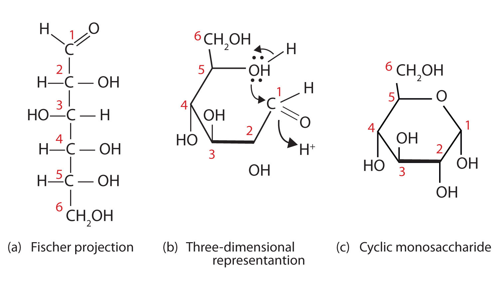
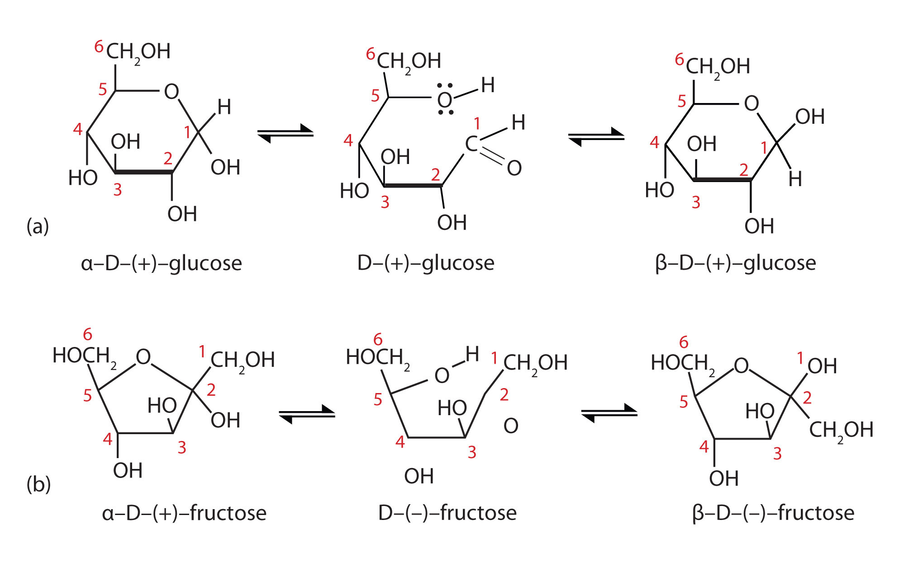
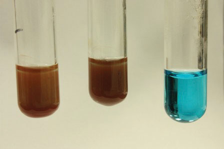
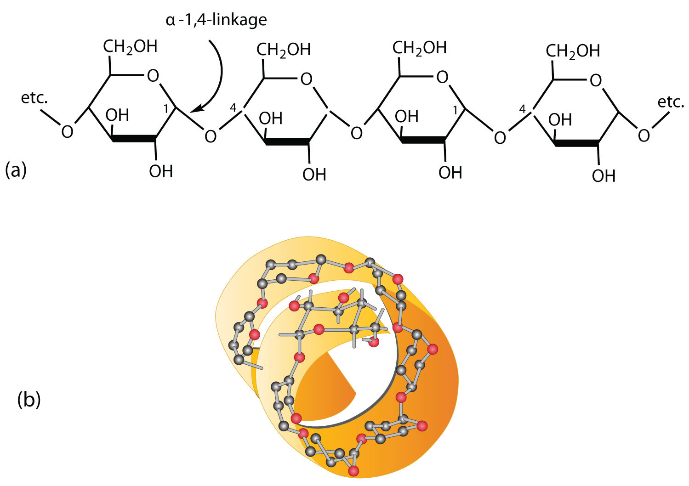
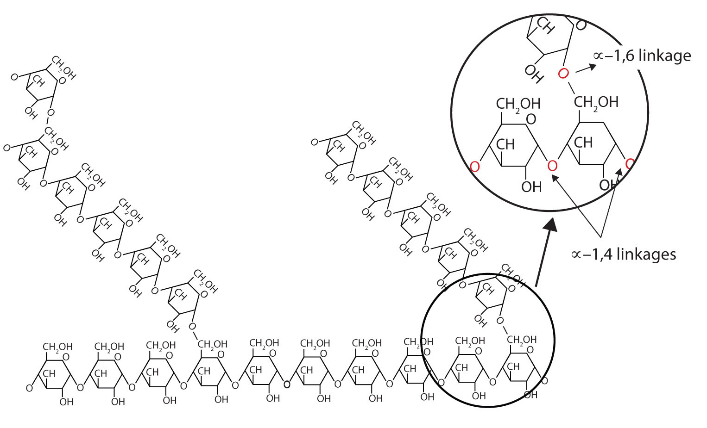
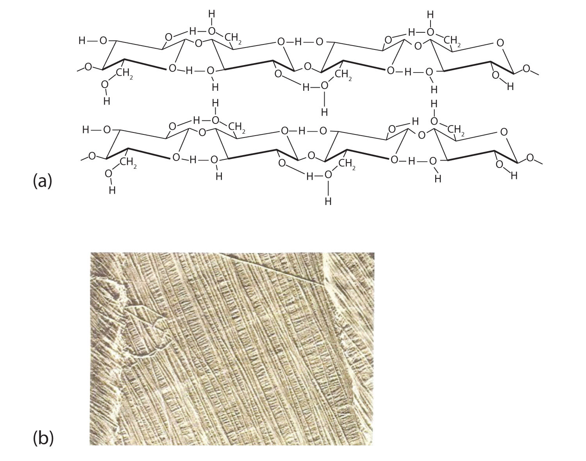

In the United States, 17.9 million people have been diagnosed with diabetes, and experts estimate that at least another 5.7 million people have the disease but have not been diagnosed. In 2006, diabetes was the seventh leading cause of death, listed on 72,507 death certificates. Moreover, it was a contributing factor in over 200,000 deaths in which the cause was listed as something else, such as heart or kidney disease.
People with diabetes are impaired in their ability to metabolize glucose, a sugar needed by the body for energy; as a result, excessive quantities of glucose accumulate in the blood and the urine. The characteristic symptoms of diabetes are weight loss, constant hunger, extreme thirst, and frequent urination (the kidneys excrete large amounts of water in an attempt to remove the excess sugar from the blood).
An important diagnostic test for diabetes is the oral glucose tolerance test, which measures the level of glucose in blood plasma. A first measurement is made after a fast of at least 8 h, followed by another measurement 2 h after the person drinks a flavored solution of 75 g of glucose dissolved in water. At the second measurement, the glucose plasma level should be no higher than 139 mg/dL. Individuals with a value between 140 and 199 mg/dL are diagnosed with prediabetes, while those with a value of 200 mg/dL or above are diagnosed with diabetes. Following a diagnosis of diabetes a person will need to monitor his or her blood glucose levels daily (or more often) using a glucose meter.
Glucose is one of the carbohydrates you will learn about in this chapter as we begin the study of biochemistryThe chemistry of molecules found in living organisms.—the chemistry of molecules found in living organisms. Later we will study the other three major types of macromolecules found in living organisms: lipids, proteins, and nucleic acids.
All carbohydratesA compound composed of carbon, hydrogen, and oxygen atoms that is a polyhydroxy aldehyde or ketone or a compound that can be broken down to form such a compound. It is one of the three main components of the human diet. consist of carbon, hydrogen, and oxygen atoms and are polyhydroxy aldehydes or ketones or are compounds that can be broken down to form such compounds. Examples of carbohydrates include starch, fiber, the sweet-tasting compounds called sugars, and structural materials such as cellulose. The term carbohydrate had its origin in a misinterpretation of the molecular formulas of many of these substances. For example, because its formula is C6H12O6, glucose was once thought to be a “carbon hydrate” with the structure C6·6H2O.
Which compounds would be classified as carbohydrates?
Solution
Which compounds would be classified as carbohydrates?
Green plants are capable of synthesizing glucose (C6H12O6) from carbon dioxide (CO2) and water (H2O) by using solar energy in the process known as photosynthesisThe process by which plants use solar energy to convert carbon dioxide and water to glucose.:
6CO2 + 6H2O + 686 kcal → C6H12O6 + 6O2(The 686 kcal come from solar energy.) Plants can use the glucose for energy or convert it to larger carbohydrates, such as starch or cellulose. Starch provides energy for later use, perhaps as nourishment for a plant’s seeds, while cellulose is the structural material of plants. We can gather and eat the parts of a plant that store energy—seeds, roots, tubers, and fruits—and use some of that energy ourselves. Carbohydrates are also needed for the synthesis of nucleic acids and many proteins and lipids.
Animals, including humans, cannot synthesize carbohydrates from carbon dioxide and water and are therefore dependent on the plant kingdom to provide these vital compounds. We use carbohydrates not only for food (about 60%–65% by mass of the average diet) but also for clothing (cotton, linen, rayon), shelter (wood), fuel (wood), and paper (wood).
The simplest carbohydrates—those that cannot be hydrolyzed to produce even smaller carbohydrates—are called monosaccharidesThe simplest carbohydrate that cannot be hydrolyzed to produce smaller carbohydrate molecules.. Two or more monosaccharides can link together to form chains that contain from two to several hundred or thousand monosaccharide units. Prefixes are used to indicate the number of such units in the chains. DisaccharideA carbohydrate containing two monosaccharide units. molecules have two monosaccharide units, trisaccharide molecules have three units, and so on. Chains with many monosaccharide units joined together are called polysaccharidesA carbohydrate containing many monosaccharide units.. All these so-called higher saccharides can be hydrolyzed back to their constituent monosaccharides.
Compounds that cannot be hydrolyzed will not react with water to form two or more smaller compounds.
Why is photosynthesis important?
Identify the differences among monosaccharides, disaccharides, and polysaccharides.
Photosynthesis is the process by which solar energy is used to reduce carbon dioxide to carbohydrates, which are needed for energy by plants and other living organisms that eat plants.
A monosaccharide is the simplest carbohydrate and cannot be hydrolyzed to produce a smaller carbohydrate; a disaccharide is composed of two monosaccharide units; and a polysaccharide contains many saccharide units.
When an aqueous solution of trehalose is heated, two molecules of glucose are produced for each molecule of trehalose. Is trehalose a monosaccharide, a disaccharide, or a polysaccharide?
When an aqueous solution of arabinose is heated, no other molecules are produced. Is arabinose a monosaccharide, a disaccharide, or a polysaccharide?
Trehalose is a disaccharide because it is hydrolyzed into two molecules of glucose (a monosaccharide).
The naturally occurring monosaccharides contain three to seven carbon atoms per molecule. Monosaccharides of specific sizes may be indicated by names composed of a stem denoting the number of carbon atoms and the suffix -ose. For example, the terms triose, tetrose, pentose, and hexose signify monosaccharides with, respectively, three, four, five, and six carbon atoms. Monosaccharides are also classified as aldoses or ketoses. Those monosaccharides that contain an aldehyde functional group are called aldosesA monosaccharide that contains an aldehyde functional group.; those containing a ketone functional group on the second carbon atom are ketosesA monosaccharide that contains a ketone functional group on the second carbon atom.. Combining these classification systems gives general names that indicate both the type of carbonyl group and the number of carbon atoms in a molecule. Thus, monosaccharides are described as aldotetroses, aldopentoses, ketopentoses, ketoheptoses, and so forth. Glucose and fructose are specific examples of an aldohexose and a ketohexose, respectively.

Draw an example of each type of compound.
Solution
The structure must have five carbon atoms with the second carbon atom being a carbonyl group and the other four carbon atoms each having an OH group attached. Several structures are possible, but one example is shown.

The structure must have four carbon atoms with the first carbon atom part of the aldehyde functional group. The other three carbon atoms each have an OH group attached. Several structures are possible, but one example is shown.

Draw an example of each type of compound.
an aldohexose
a ketotetrose
The simplest sugars are the trioses. The possible trioses are shown in part (a) of Figure 16.2 "Structures of the Trioses"; glyceraldehyde is an aldotriose, while dihydroxyacetone is a ketotriose. Notice that two structures are shown for glyceraldehyde. These structures are stereoisomersAn isomer that has the same structural formula but differs in the arrangement of atoms or groups of atoms in three-dimensional space., isomers having the same structural formula but differing in the arrangement of atoms or groups of atoms in three-dimensional space. If you make models of the two stereoisomers of glyceraldehyde, you will find that you cannot place one model on top of the other and have each functional group point in the same direction. However, if you place one of the models in front of a mirror, the image in the mirror will be identical to the second stereoisomer in part (b) of Figure 16.2 "Structures of the Trioses". Molecules that are nonsuperimposable (nonidentical) mirror images of each other are a type of stereoisomer called enantiomersStereoisomers that are nonsuperimposable mirror images of each other. (Greek enantios, meaning “opposite”).
Cis-trans (geometric) isomers were discussed in Chapter 13 "Unsaturated and Aromatic Hydrocarbons", Section 13.2 "Cis-Trans Isomers (Geometric Isomers)". These are another type of stereoisomers.
Figure 16.2 Structures of the Trioses

(a) D- and L-glyceraldehyde are mirror images of each other and represent a pair of enantiomers. (b) A ball-and-stick model of D-glyceraldehyde is reflected in a mirror. Note that the reflection has the same structure as L-glyceraldehyde.
A key characteristic of enantiomers is that they have a carbon atom to which four different groups are attached. Note, for example, the four different groups attached to the central carbon atom of glyceraldehyde (part (a) of Figure 16.2 "Structures of the Trioses"). A carbon atom that has four different groups attached is a chiral carbonA carbon atom that has four different groups attached to it.. If a molecule contains one or more chiral carbons, it is likely to exist as two or more stereoisomers. Dihydroxyacetone does not contain a chiral carbon and thus does not exist as a pair of stereoisomers. Glyceraldehyde, however, has a chiral carbon and exists as a pair of enantiomers. Except for the direction in which each enantiomer rotates plane-polarized light, these two molecules have identical physical properties. One enantiomer has a specific rotation of +8.7°, while the other has a specific rotation of −8.7°.
H. Emil Fischer, a German chemist, developed the convention commonly used for writing two-dimensional representations of the monosaccharides, such as those in part (a) of Figure 16.2 "Structures of the Trioses". In these structural formulas, the aldehyde group is written at the top, and the hydrogen atoms and OH groups that are attached to each chiral carbon are written to the right or left. (If the monosaccharide is a ketose, the ketone functional group is the second carbon atom.) Vertical lines represent bonds pointing away from you, while horizontal lines represent bonds coming toward you. The formulas of chiral molecules represented in this manner are referred to as Fischer projections.
The two enantiomers of glyceraldehyde are especially important because monosaccharides with more than three carbon atoms can be considered as being derived from them. Thus, D- and L-glyceraldehyde provide reference points for designating and drawing all other monosaccharides. Sugars whose Fischer projections terminate in the same configuration as D-glyceraldehyde are designated as D sugarsA sugar whose Fischer projection terminates in the same configuration as D-glyceraldehyde.; those derived from L-glyceraldehyde are designated as L sugarsA sugar whose Fischer projection terminates in the same configuration as L-glyceraldehyde..
By convention, the penultimate (next-to-last) carbon atom has been chosen as the carbon atom that determines if a sugar is D or L. It is the chiral carbon farthest from the aldehyde or ketone functional group.
A beam of ordinary light can be pictured as a bundle of waves; some move up and down, some sideways, and others at all other conceivable angles. When a beam of light has been polarized, however, the waves in the bundle all vibrate in a single plane. Light altered in this way is called plane-polarized light. Much of what chemists know about stereoisomers comes from studying the effects they have on plane-polarized light. In this illustration, the light on the left is not polarized, while that on the right is polarized.

Sunlight, in general, is not polarized; light from an ordinary light bulb or an ordinary flashlight is not polarized. One way to polarize ordinary light is to pass it through Polaroid sheets, special plastic sheets containing carefully oriented organic compounds that permit only light vibrating in a single plane to pass through. To the eye, polarized light doesn’t “look” any different from nonpolarized light. We can detect polarized light, however, by using a second sheet of polarizing material, as shown here.

In the photo on the left, two Polaroid sheets are aligned in the same direction; plane-polarized light from the first Polaroid sheet can pass through the second sheet. In the photo on the right, the top Polaroid sheet has been rotated 90° and now blocks the plane-polarized light that comes through the first Polaroid sheet.
Certain substances act on polarized light by rotating the plane of vibration. Such substances are said to be optically active. The extent of optical activity is measured by a polarimeter, an instrument that contains two polarizing lenses separated by a sample tube, as shown in the accompanying figure. With the sample tube empty, maximum light reaches the observer’s eye when the two lenses are aligned so that both pass light vibrating in the same plane. When an optically active substance is placed in the sample tube, that substance rotates the plane of polarization of the light passing through it, so that the polarized light emerging from the sample tube is vibrating in a different direction than when it entered the tube. To see the maximum amount of light when the sample is in place, the observer must rotate one lens to accommodate the change in the plane of polarization.
Figure 16.3 Diagram of a Polarimeter

Some optically active substances rotate the plane of polarized light to the right (clockwise) from the observer’s point of view. These compounds are said to be dextrorotatory; substances that rotate light to the left (counterclockwise) are levorotatory. To denote the direction of rotation, a positive sign (+) is given to dextrorotatory substances, and a negative sign (−) is given to levorotatory substances.
What is a chiral carbon?
Describe how enantiomers differ.
A chiral carbon is a carbon atom with four different groups attached to it.
Enantiomers are mirror images of each other; they differ in the arrangements of atoms around a chiral carbon.
Identify each sugar as an aldose or a ketose and then as a triose, tetrose, pentose, or hexose.
D-glucose

L-ribulose

D-glyceraldehyde

Identify each sugar as an aldose or a ketose and then as a triose, tetrose, pentose, or hexose.
dihydroxyacetone

D-ribose

D-galactose

Identify each sugar as an aldose or a ketose and then as a D sugar or an L sugar.


Identify each sugar as an aldose or a ketose and then as a D sugar or an L sugar.


Although a variety of monosaccharides are found in living organisms, three hexoses are particularly abundant: D-glucose, D-galactose, and D-fructose (Figure 16.4 "Structures of Three Important Hexoses"). Glucose and galactose are both aldohexoses, while fructose is a ketohexose.
D-Glucose, generally referred to as simply glucose, is the most abundant sugar found in nature; most of the carbohydrates we eat are eventually converted to it in a series of biochemical reactions that produce energy for our cells. It is also known by three other names: dextrose, from the fact that it rotates plane-polarized light in a clockwise (dextrorotatory) direction; corn sugar because in the United States cornstarch is used in the commercial process that produces glucose from the hydrolysis of starch; and blood sugar because it is the carbohydrate found in the circulatory system of animals. Normal blood sugar values range from 70 to 105 mg glucose/dL plasma, and normal urine may contain anywhere from a trace to 20 mg glucose/dL urine.
The Fischer projection of D-glucose is given in Figure 16.5 "Cyclization of D-Glucose". Glucose is a D sugar because the OH group on the fifth carbon atom (the chiral center farthest from the carbonyl group) is on the right. In fact, all the OH groups except the one on the third carbon atom are to the right.
D-Galactose does not occur in nature in the uncombined state. It is released when lactose, a disaccharide found in milk, is hydrolyzed. The galactose needed by the human body for the synthesis of lactose is obtained by the metabolic conversion of D-glucose to D-galactose. Galactose is also an important constituent of the glycolipids that occur in the brain and the myelin sheath of nerve cells. (For more information about glycolipids, see Chapter 17 "Lipids", Section 17.3 "Membranes and Membrane Lipids".) For this reason it is also known as brain sugar. The structure of D-galactose is shown in Figure 16.4 "Structures of Three Important Hexoses". Notice that the configuration differs from that of glucose only at the fourth carbon atom.
D-Fructose, also shown in Figure 16.4 "Structures of Three Important Hexoses", is the most abundant ketohexose. Note that from the third through the sixth carbon atoms, its structure is the same as that of glucose. It occurs, along with glucose and sucrose, in honey (which is 40% fructose) and sweet fruits. Fructose (from the Latin fructus, meaning “fruit”) is also referred to as levulose because it has a specific rotation that is strongly levorotatory (−92.4°). It is the sweetest sugar, being 1.7 times sweeter than sucrose, although many nonsugars are several hundred or several thousand times as sweet (Table 16.1 "The Relative Sweetness of Some Compounds (Sucrose = 100)").
Table 16.1 The Relative Sweetness of Some Compounds (Sucrose = 100)
| Compound | Relative Sweetness |
|---|---|
| lactose | 16 |
| maltose | 32 |
| glucose | 74 |
| sucrose | 100 |
| fructose | 173 |
| aspartame | 18,000 |
| acesulfame K | 20,000 |
| saccharin | 30,000 |
| sucralose | 60,000 |
Although sweetness is commonly associated with mono- and disaccharides, it is not a property found only in sugars. Several other kinds of organic compounds have been synthesized that are far superior as sweetening agents. These so-called high-intensity or artificial sweeteners are useful for people with diabetes or other medical conditions that require them to control their carbohydrate intake. The synthetic compounds are noncaloric or used in such small quantities that they do not add significantly to the caloric value of food.
The first artificial sweetener—saccharin—was discovered by accident in 1879. It is 300 times sweeter than sucrose, but it passes through the body unchanged and thus adds no calories to the diet. After its discovery, saccharin was used until it was banned in the early 1900s. However, during the sugar-short years of World War I, the ban was lifted and was not reinstated at the war’s end. One drawback to the use of saccharin is its bitter, metallic aftertaste. The initial solution to this problem was to combine saccharin with cyclamate, a second artificial sweetener discovered in 1937.
In the 1960s and 1970s, several clinical tests with laboratory animals implicated both cyclamate and saccharin as carcinogenic (cancer-causing) substances. The results from the cyclamate tests were completed first, and cyclamate was banned in the United States in 1969. Then a major study was released in Canada in 1977 indicating that saccharin increased the incidence of bladder cancer in rats. The US Food and Drug Administration (FDA) proposed a ban on saccharin that raised immediate public opposition because saccharin was the only artificial sweetener still available. In response, Congress passed the Saccharin Study and Labeling Act in 1977, permitting the use of saccharin as long as any product containing it was labeled with a consumer warning regarding the possible elevation of the risk of bladder cancer. Today this warning is no longer required; moreover, the FDA is currently reviewing the ban on cyclamate, as 75 additional studies and years of usage in other countries, such as Canada, have failed to show that it has any carcinogenic effect.
A third artificial sweetener, aspartame, was discovered in 1965. This white crystalline compound is about 180 times sweeter than sucrose and has no aftertaste. It was approved for use in 1981 and is used to sweeten a wide variety of foods because it blends well with other food flavors. Aspartame is not used in baked goods, however, because it is not heat stable.
In the body (or when heated), aspartame is initially hydrolyzed to three molecules: the amino acids aspartic acid and phenylalanine and an alcohol methanol. Repeated controversy regarding the safety of aspartame arises partly from the fact that the body metabolizes the released methanol to formaldehyde. It should be noted, though, that a glass of tomato juice has six times as much methanol as a similar amount of a diet soda containing aspartame. The only documented risk connected to aspartame use is for individuals with the genetic disease phenylketonuria (PKU); these individuals lack the enzyme needed to metabolize the phenylalanine released when aspartame is broken down by the body. Because of the danger to people with PKU, all products containing aspartame must carry a warning label.
Acesulfame K, discovered just two years after aspartame (1967), was approved for use in the United States in 1988. It is 200 times sweeter than sugar and, unlike aspartame, is heat stable. It has no lingering aftertaste.
One of the newest artificial sweeteners to gain FDA approval (April 1998) for use in the United States is sucralose, a white crystalline solid approximately 600 times sweeter than sucrose. Sucralose is synthesized from sucrose and has three chlorine atoms substituted for three OH groups. It is noncaloric because it passes through the body unchanged. It can be used in baking because it is heat stable.
All of the extensive clinical studies completed to date have indicated that these artificial sweeteners approved for use in the United States are safe for consumption by healthy individuals in moderate amounts.

Describe the similarities and differences in the structures of D-glucose and D-galactose.
Describe similarities and differences in the structures of D-glucose and D-fructose.
Both monosaccharides are aldohexoses. The two monosaccharides differ in the configuration around the fourth carbon atom.
Both monosaccharides are hexoses. D-glucose is an aldohexose, while D-fructose is a ketohexose.
Identify each sugar by its common chemical name.
Identify each sugar by its common chemical name.
Identify each sugar as an aldohexose or a ketohexose.
What hexose would you expect to be most abundant in each food?
So far we have represented monosaccharides as linear molecules, but many of them also adopt cyclic structures. This conversion occurs because of the ability of aldehydes and ketones to react with alcohols:
In some cases, OH and carbonyl groups on the same molecule are able to react with one another in an intramolecular reaction. Thus, monosaccharides larger than tetroses exist mainly as cyclic compounds (Figure 16.5 "Cyclization of D-Glucose"). You might wonder why the aldehyde reacts with the OH group on the fifth carbon atom rather than the OH group on the second carbon atom next to it. Recall from Chapter 12 "Organic Chemistry: Alkanes and Halogenated Hydrocarbons", Section 12.9 "Cycloalkanes", that cyclic alkanes containing five or six carbon atoms in the ring are the most stable. The same is true for monosaccharides that form cyclic structures: rings consisting of five or six carbon atoms are the most stable.
Figure 16.5 Cyclization of D-Glucose
D-Glucose can be represented with a Fischer projection (a) or three dimensionally (b). By reacting the OH group on the fifth carbon atom with the aldehyde group, the cyclic monosaccharide (c) is produced.
When a straight-chain monosaccharide, such as any of the structures shown in Figure 16.4 "Structures of Three Important Hexoses", forms a cyclic structure, the carbonyl oxygen atom may be pushed either up or down, giving rise to two stereoisomers, as shown in Figure 16.6 "Monosaccharides". The structure shown on the left side of Figure 16.6 "Monosaccharides", with the OH group on the first carbon atom projected downward, represent what is called the alpha (α) form. The structures on the right side, with the OH group on the first carbon atom pointed upward, is the beta (β) form. These two stereoisomers of a cyclic monosaccharide are known as anomersStereoisomers that differ in structure around what was the carbonyl carbon atom in the straight-chain form of a monosaccharide.; they differ in structure around the anomeric carbonThe carbon atom that was the carbonyl carbon atom in the straight-chain form of a monosaccharide.—that is, the carbon atom that was the carbonyl carbon atom in the straight-chain form.
Figure 16.6 Monosaccharides
In an aqueous solution, monosaccharides exist as an equilibrium mixture of three forms. The interconversion between the forms is known as mutarotation, which is shown for D-glucose (a) and D-fructose (b).
It is possible to obtain a sample of crystalline glucose in which all the molecules have the α structure or all have the β structure. The α form melts at 146°C and has a specific rotation of +112°, while the β form melts at 150°C and has a specific rotation of +18.7°. When the sample is dissolved in water, however, a mixture is soon produced containing both anomers as well as the straight-chain form, in dynamic equilibrium (part (a) of Figure 16.6 "Monosaccharides"). You can start with a pure crystalline sample of glucose consisting entirely of either anomer, but as soon as the molecules dissolve in water, they open to form the carbonyl group and then reclose to form either the α or the β anomer. The opening and closing repeats continuously in an ongoing interconversion between anomeric forms and is referred to as mutarotationThe ongoing interconversion between anomeric forms of a monosaccharide to form an equilibrium mixture. (Latin mutare, meaning “to change”). At equilibrium, the mixture consists of about 36% α-D-glucose, 64% β-D-glucose, and less than 0.02% of the open-chain aldehyde form. The observed rotation of this solution is +52.7°.
Even though only a small percentage of the molecules are in the open-chain aldehyde form at any time, the solution will nevertheless exhibit the characteristic reactions of an aldehyde. As the small amount of free aldehyde is used up in a reaction, there is a shift in the equilibrium to yield more aldehyde. Thus, all the molecules may eventually react, even though very little free aldehyde is present at a time.
In Figure 16.5 "Cyclization of D-Glucose" and Figure 16.6 "Monosaccharides", and elsewhere in this book, the cyclic forms of sugars are depicted using a convention first suggested by Walter N. Haworth, an English chemist. The molecules are drawn as planar hexagons with a darkened edge representing the side facing toward the viewer. The structure is simplified to show only the functional groups attached to the carbon atoms. Any group written to the right in a Fischer projection appears below the plane of the ring in a Haworth projection, and any group written to the left in a Fischer projection appears above the plane in a Haworth projection.
The difference between the α and the β forms of sugars may seem trivial, but such structural differences are often crucial in biochemical reactions. This explains why we can get energy from the starch in potatoes and other plants but not from cellulose, even though both starch and cellulose are polysaccharides composed of glucose molecules linked together. We will examine the effects of these differences more closely in Section 16.7 "Polysaccharides" and when we discuss enzyme specificity in Chapter 18 "Amino Acids, Proteins, and Enzymes", Section 18.5 "Enzymes".
Define each term.
How can you prove that a solution of α-D-glucose exhibits mutarotation?
Place a sample of pure α-D-glucose in a polarimeter and measure its observed rotation. This value will change as mutarotation occurs.
Draw the cyclic structure for β-D-glucose. Identify the anomeric carbon.
Draw the cyclic structure for α-D-fructose. Identify the anomeric carbon.
Given that the aldohexose D-mannose differs from D-glucose only in the configuration at the second carbon atom, draw the cyclic structure for α-D-mannose.
Given that the aldohexose D-allose differs from D-glucose only in the configuration at the third carbon atom, draw the cyclic structure for β-D-allose.
Monosaccharides such as glucose and fructose are crystalline solids at room temperature, but they are quite soluble in water, each molecule having several OH groups that readily engage in hydrogen bonding. The chemical behavior of these monosaccharides is likewise determined by their functional groups.
An important reaction of monosaccharides is the oxidation of the aldehyde group, one of the most easily oxidized organic functional groups. Aldehyde oxidation can be accomplished with any mild oxidizing agent, such as Tollens’ reagent or Benedict’s reagent. (For more information about aldehyde oxidation, see Chapter 14 "Organic Compounds of Oxygen", Section 14.5 "Reactions of Alcohols".) With the latter, complexed copper(II) ions are reduced to copper(I) ions that form a brick-red precipitate [copper(I) oxide; Figure 16.7 "Benedict’s Test"].
Any carbohydrate capable of reducing either Tollens’ or Benedict’s reagents without first undergoing hydrolysis is said to be a reducing sugarAny carbohydrate capable of reducing a mild oxidizing agent, such as Tollens’ or Benedict’s reagents, without first undergoing hydrolysis.. Because both the Tollens’ and Benedict’s reagents are basic solutions, ketoses (such as fructose) also give positive tests due to an equilibrium that exists between ketoses and aldoses in a reaction known as tautomerism.
Figure 16.7 Benedict’s Test
Benedict’s test was performed on three carbohydrates, depicted from left to right: fructose, glucose, and sucrose. The solution containing sucrose remains blue because sucrose is a nonreducing sugar.
These reactions have been used as simple and rapid diagnostic tests for the presence of glucose in blood or urine. For example, Clinitest tablets, which are used to test for sugar in the urine, contain copper(II) ions and are based on Benedict’s test. A green color indicates very little sugar, whereas a brick-red color indicates sugar in excess of 2 g/100 mL of urine.
Why are monosaccharides soluble in water?
What is a reducing sugar?
Monosaccharides are quite soluble in water because of the numerous OH groups that readily engage in hydrogen bonding with water.
any carbohydrate capable of reducing a mild oxidizing agent, such as Tollens’ or Benedict’s reagents, without first undergoing hydrolysis
Which gives a positive Benedict’s test—L-galactose, levulose, or D-glucose?
Which gives a positive Benedict’s test—D-glyceraldehyde, corn sugar, or L-fructose?
D-Galactose can be oxidized at the sixth carbon atom to yield D-galacturonic acid and at both the first and sixth carbon atoms to yield D-galactaric acid. Draw the Fischer projection for each oxidation product.
D-Glucose can be oxidized at the first carbon atom to form D-gluconic acid, at the sixth carbon atom to yield D-glucuronic acid, and at both the first and sixth carbon atoms to yield D-glucaric acid. Draw the Fischer projection for each oxidation product.
All three will give a positive Benedict’s test because they are all monosaccharides.
In Section 16.4 "Cyclic Structures of Monosaccharides", you learned that monosaccharides can form cyclic structures by the reaction of the carbonyl group with an OH group. These cyclic molecules can in turn react with another alcohol. Disaccharides (C12H22O11) are sugars composed of two monosaccharide units that are joined by a carbon–oxygen-carbon linkage known as a glycosidic linkageThe carbon–oxygen-carbon linkage between monosaccharide units in more complex carbohydrates, such as disaccharides or polysaccharides.. This linkage is formed from the reaction of the anomeric carbon of one cyclic monosaccharide with the OH group of a second monosaccharide.

The disaccharides differ from one another in their monosaccharide constituents and in the specific type of glycosidic linkage connecting them. There are three common disaccharides: maltose, lactose, and sucrose. All three are white crystalline solids at room temperature and are soluble in water. We’ll consider each sugar in more detail.
Maltose occurs to a limited extent in sprouting grain. It is formed most often by the partial hydrolysis of starch and glycogen. In the manufacture of beer, maltose is liberated by the action of malt (germinating barley) on starch; for this reason, it is often referred to as malt sugar. Maltose is about 30% as sweet as sucrose. The human body is unable to metabolize maltose or any other disaccharide directly from the diet because the molecules are too large to pass through the cell membranes of the intestinal wall. Therefore, an ingested disaccharide must first be broken down by hydrolysis into its two constituent monosaccharide units. In the body, such hydrolysis reactions are catalyzed by enzymes such as maltase. The same reactions can be carried out in the laboratory with dilute acid as a catalyst, although in that case the rate is much slower, and high temperatures are required. Whether it occurs in the body or a glass beaker, the hydrolysis of maltose produces two molecules of D-glucose.
Maltose is a reducing sugar. Thus, its two glucose molecules must be linked in such a way as to leave one anomeric carbon that can open to form an aldehyde group. The glucose units in maltose are joined in a head-to-tail fashion through an α-linkage from the first carbon atom of one glucose molecule to the fourth carbon atom of the second glucose molecule (that is, an α-1,4-glycosidic linkage; see Figure 16.8 "An Equilibrium Mixture of Maltose Isomers"). The bond from the anomeric carbon of the first monosaccharide unit is directed downward, which is why this is known as an α-glycosidic linkage. The OH group on the anomeric carbon of the second glucose can be in either the α or the β position, as shown in Figure 16.8 "An Equilibrium Mixture of Maltose Isomers".
Figure 16.8 An Equilibrium Mixture of Maltose Isomers

Lactose is known as milk sugar because it occurs in the milk of humans, cows, and other mammals. In fact, the natural synthesis of lactose occurs only in mammary tissue, whereas most other carbohydrates are plant products. Human milk contains about 7.5% lactose, and cow’s milk contains about 4.5%. This sugar is one of the lowest ranking in terms of sweetness, being about one-sixth as sweet as sucrose (see Table 16.1 "The Relative Sweetness of Some Compounds (Sucrose = 100)" in Section 16.3 "Important Hexoses"). Lactose is produced commercially from whey, a by-product in the manufacture of cheese. It is important as an infant food and in the production of penicillin.
Lactose is a reducing sugar composed of one molecule of D-galactose and one molecule of D-glucose joined by a β-1,4-glycosidic bond (the bond from the anomeric carbon of the first monosaccharide unit being directed upward). The two monosaccharides are obtained from lactose by acid hydrolysis or the catalytic action of the enzyme lactase:

Many adults and some children suffer from a deficiency of lactase. These individuals are said to be lactose intolerantThe inability to digest the lactose found in milk or dairy products due to a deficiency of the enzyme lactase. because they cannot digest the lactose found in milk. A more serious problem is the genetic disease galactosemiaA genetic disease caused by the absence of one of the enzymes needed to convert galactose to glucose., which results from the absence of an enzyme needed to convert galactose to glucose. Certain bacteria can metabolize lactose, forming lactic acid as one of the products. This reaction is responsible for the “souring” of milk.
For this trisaccharide, indicate whether each glycosidic linkage is α or β.

Solution
The glycosidic linkage between sugars 1 and 2 is β because the bond is directed up from the anomeric carbon. The glycosidic linkage between sugars 2 and 3 is α because the bond is directed down from the anomeric carbon.
For this trisaccharide, indicate whether each glycosidic linkage is α or β.

Lactose makes up about 40% of an infant’s diet during the first year of life. Infants and small children have one form of the enzyme lactase in their small intestines and can digest the sugar easily; however, adults usually have a less active form of the enzyme, and about 70% of the world’s adult population has some deficiency in its production. As a result, many adults experience a reduction in the ability to hydrolyze lactose to galactose and glucose in their small intestine. For some people the inability to synthesize sufficient enzyme increases with age. Up to 20% of the US population suffers some degree of lactose intolerance.
In people with lactose intolerance, some of the unhydrolyzed lactose passes into the colon, where it tends to draw water from the interstitial fluid into the intestinal lumen by osmosis. At the same time, intestinal bacteria may act on the lactose to produce organic acids and gases. The buildup of water and bacterial decay products leads to abdominal distention, cramps, and diarrhea, which are symptoms of the condition.
The symptoms disappear if milk or other sources of lactose are excluded from the diet or consumed only sparingly. Alternatively, many food stores now carry special brands of milk that have been pretreated with lactase to hydrolyze the lactose. Cooking or fermenting milk causes at least partial hydrolysis of the lactose, so some people with lactose intolerance are still able to enjoy cheese, yogurt, or cooked foods containing milk. The most common treatment for lactose intolerance, however, is the use of lactase preparations (e.g., Lactaid), which are available in liquid and tablet form at drugstores and grocery stores. These are taken orally with dairy foods—or may be added to them directly—to assist in their digestion.
Galactosemia is a condition in which one of the enzymes needed to convert galactose to glucose is missing. Consequently, the blood galactose level is markedly elevated, and galactose is found in the urine. An infant with galactosemia experiences a lack of appetite, weight loss, diarrhea, and jaundice. The disease may result in impaired liver function, cataracts, mental retardation, and even death. If galactosemia is recognized in early infancy, its effects can be prevented by the exclusion of milk and all other sources of galactose from the diet. As a child with galactosemia grows older, he or she usually develops an alternate pathway for metabolizing galactose, so the need to restrict milk is not permanent. The incidence of galactosemia in the United States is 1 in every 65,000 newborn babies.
Sucrose, probably the largest-selling pure organic compound in the world, is known as beet sugar, cane sugar, table sugar, or simply sugar. Most of the sucrose sold commercially is obtained from sugar cane and sugar beets (whose juices are 14%–20% sucrose) by evaporation of the water and recrystallization. The dark brown liquid that remains after the recrystallization of sugar is sold as molasses.
The sucrose molecule is unique among the common disaccharides in having an α-1,β-2-glycosidic (head-to-head) linkage. Because this glycosidic linkage is formed by the OH group on the anomeric carbon of α-D-glucose and the OH group on the anomeric carbon of β-D-fructose, it ties up the anomeric carbons of both glucose and fructose.

This linkage gives sucrose certain properties that are quite different from those of maltose and lactose. As long as the sucrose molecule remains intact, neither monosaccharide “uncyclizes” to form an open-chain structure. Thus, sucrose is incapable of mutarotation and exists in only one form both in the solid state and in solution. In addition, sucrose does not undergo reactions that are typical of aldehydes and ketones. Therefore, sucrose is a nonreducing sugar.
The hydrolysis of sucrose in dilute acid or through the action of the enzyme sucrase (also known as invertase) gives an equimolar mixture of glucose and fructose. This 1:1 mixture is referred to as invert sugar because it rotates plane-polarized light in the opposite direction than sucrose. The hydrolysis reaction has several practical applications. Sucrose readily recrystallizes from a solution, but invert sugar has a much greater tendency to remain in solution. In the manufacture of jelly and candy and in the canning of fruit, the recrystallization of sugar is undesirable. Therefore, conditions leading to the hydrolysis of sucrose are employed in these processes. Moreover, because fructose is sweeter than sucrose, the hydrolysis adds to the sweetening effect. Bees carry out this reaction when they make honey.
The average American consumes more than 100 lb of sucrose every year. About two-thirds of this amount is ingested in soft drinks, presweetened cereals, and other highly processed foods. The widespread use of sucrose is a contributing factor to obesity and tooth decay. Carbohydrates such as sucrose, are converted to fat when the caloric intake exceeds the body’s requirements, and sucrose causes tooth decay by promoting the formation of plaque that sticks to teeth.
What monosaccharides are obtained by the hydrolysis of each disaccharide?
Identify each sugar by its common chemical name.
Identify each sugar by its common chemical name.
For each disaccharide, indicate whether the glycosidic linkage is α or β.


For each disaccharide, indicate whether the glycosidic linkage is α or β.


Identify each disaccharide in Exercise 3 as a reducing or nonreducing sugar. If it is a reducing sugar, draw its structure and circle the anomeric carbon. State if the OH group at the anomeric carbon is in the α or the β position.
Identify each disaccharide in Exercise 4 as a reducing or nonreducing sugar. If it is a reducing sugar, draw its structure and circle the anomeric carbon. State if the OH group at the anomeric carbon is in the α or β position.
Melibiose is a disaccharide that occurs in some plant juices. Its structure is as follows:

Cellobiose is a disaccharide composed of two glucose units joined by a β-1,4-glycosidic linkage.


3a: nonreducing; 3b: reducing


The polysaccharides are the most abundant carbohydrates in nature and serve a variety of functions, such as energy storage or as components of plant cell walls. Polysaccharides are very large polymers composed of tens to thousands of monosaccharides joined together by glycosidic linkages. The three most abundant polysaccharides are starch, glycogen, and cellulose. These three are referred to as homopolymers because each yields only one type of monosaccharide (glucose) after complete hydrolysis. Heteropolymers may contain sugar acids, amino sugars, or noncarbohydrate substances in addition to monosaccharides. Heteropolymers are common in nature (gums, pectins, and other substances) but will not be discussed further in this textbook. The polysaccharides are nonreducing carbohydrates, are not sweet tasting, and do not undergo mutarotation.
Starch is the most important source of carbohydrates in the human diet and accounts for more than 50% of our carbohydrate intake. It occurs in plants in the form of granules, and these are particularly abundant in seeds (especially the cereal grains) and tubers, where they serve as a storage form of carbohydrates. The breakdown of starch to glucose nourishes the plant during periods of reduced photosynthetic activity. We often think of potatoes as a “starchy” food, yet other plants contain a much greater percentage of starch (potatoes 15%, wheat 55%, corn 65%, and rice 75%). Commercial starch is a white powder.
Starch is a mixture of two polymers: amyloseA linear polymer of glucose units found in starch. and amylopectinA branched polymer of glucose units found in starch.. Natural starches consist of about 10%–30% amylase and 70%–90% amylopectin. Amylose is a linear polysaccharide composed entirely of D-glucose units joined by the α-1,4-glycosidic linkages we saw in maltose (part (a) of Figure 16.9 "Amylose"). Experimental evidence indicates that amylose is not a straight chain of glucose units but instead is coiled like a spring, with six glucose monomers per turn (part (b) of Figure 16.9 "Amylose"). When coiled in this fashion, amylose has just enough room in its core to accommodate an iodine molecule. The characteristic blue-violet color that appears when starch is treated with iodine is due to the formation of the amylose-iodine complex. This color test is sensitive enough to detect even minute amounts of starch in solution.
Figure 16.9 Amylose
(a) Amylose is a linear chain of α-D-glucose units joined together by α-1,4-glycosidic bonds. (b) Because of hydrogen bonding, amylose acquires a spiral structure that contains six glucose units per turn.
Amylopectin is a branched-chain polysaccharide composed of glucose units linked primarily by α-1,4-glycosidic bonds but with occasional α-1,6-glycosidic bonds, which are responsible for the branching. A molecule of amylopectin may contain many thousands of glucose units with branch points occurring about every 25–30 units (Figure 16.10 "Representation of the Branching in Amylopectin and Glycogen"). The helical structure of amylopectin is disrupted by the branching of the chain, so instead of the deep blue-violet color amylose gives with iodine, amylopectin produces a less intense reddish brown.
Figure 16.10 Representation of the Branching in Amylopectin and Glycogen
Both amylopectin and glycogen contain branch points that are linked through α-1,6-linkages. These branch points occur more often in glycogen.
Dextrins are glucose polysaccharides of intermediate size. The shine and stiffness imparted to clothing by starch are due to the presence of dextrins formed when clothing is ironed. Because of their characteristic stickiness with wetting, dextrins are used as adhesives on stamps, envelopes, and labels; as binders to hold pills and tablets together; and as pastes. Dextrins are more easily digested than starch and are therefore used extensively in the commercial preparation of infant foods.
The complete hydrolysis of starch yields, in successive stages, glucose:
starch → dextrins → maltose → glucoseIn the human body, several enzymes known collectively as amylases degrade starch sequentially into usable glucose units.
Glycogen is the energy reserve carbohydrate of animals. Practically all mammalian cells contain some stored carbohydrates in the form of glycogen, but it is especially abundant in the liver (4%–8% by weight of tissue) and in skeletal muscle cells (0.5%–1.0%). Like starch in plants, glycogen is found as granules in liver and muscle cells. When fasting, animals draw on these glycogen reserves during the first day without food to obtain the glucose needed to maintain metabolic balance.
About 70% of the total glycogen in the body is stored in muscle cells. Although the percentage of glycogen (by weight) is higher in the liver, the much greater mass of skeletal muscle stores a greater total amount of glycogen.
Glycogen is structurally quite similar to amylopectin, although glycogen is more highly branched (8–12 glucose units between branches) and the branches are shorter. When treated with iodine, glycogen gives a reddish brown color. Glycogen can be broken down into its D-glucose subunits by acid hydrolysis or by the same enzymes that catalyze the breakdown of starch. In animals, the enzyme phosphorylase catalyzes the breakdown of glycogen to phosphate esters of glucose.
Cellulose, a fibrous carbohydrate found in all plants, is the structural component of plant cell walls. Because the earth is covered with vegetation, cellulose is the most abundant of all carbohydrates, accounting for over 50% of all the carbon found in the vegetable kingdom. Cotton fibrils and filter paper are almost entirely cellulose (about 95%), wood is about 50% cellulose, and the dry weight of leaves is about 10%–20% cellulose. The largest use of cellulose is in the manufacture of paper and paper products. Although the use of noncellulose synthetic fibers is increasing, rayon (made from cellulose) and cotton still account for over 70% of textile production.
Like amylose, cellulose is a linear polymer of glucose. It differs, however, in that the glucose units are joined by β-1,4-glycosidic linkages, producing a more extended structure than amylose (part (a) of Figure 16.11 "Cellulose"). This extreme linearity allows a great deal of hydrogen bonding between OH groups on adjacent chains, causing them to pack closely into fibers (part (b) of Figure 16.11 "Cellulose"). As a result, cellulose exhibits little interaction with water or any other solvent. Cotton and wood, for example, are completely insoluble in water and have considerable mechanical strength. Because cellulose does not have a helical structure, it does not bind to iodine to form a colored product.
Figure 16.11 Cellulose
(a) There is extensive hydrogen bonding in the structure of cellulose. (b) In this electron micrograph of the cell wall of an alga, the wall consists of successive layers of cellulose fibers in parallel arrangement.
Cellulose yields D-glucose after complete acid hydrolysis, yet humans are unable to metabolize cellulose as a source of glucose. Our digestive juices lack enzymes that can hydrolyze the β-glycosidic linkages found in cellulose, so although we can eat potatoes, we cannot eat grass. However, certain microorganisms can digest cellulose because they make the enzyme cellulase, which catalyzes the hydrolysis of cellulose. The presence of these microorganisms in the digestive tracts of herbivorous animals (such as cows, horses, and sheep) allows these animals to degrade the cellulose from plant material into glucose for energy. Termites also contain cellulase-secreting microorganisms and thus can subsist on a wood diet. This example once again demonstrates the extreme stereospecificity of biochemical processes.
Certified diabetes educators come from a variety of health professions, such as nursing and dietetics, and specialize in the education and treatment of patients with diabetes. A diabetes educator will work with patients to manage their diabetes. This involves teaching the patient to monitor blood sugar levels, make good food choices, develop and maintain an exercise program, and take medication, if required. Diabetes educators also work with hospital or nursing home staff to improve the care of diabetic patients. Educators must be willing to spend time attending meetings and reading the current literature to maintain their knowledge of diabetes medications, nutrition, and blood monitoring devices so that they can pass this information to their patients.
What purposes do starch and cellulose serve in plants?
What purpose does glycogen serve in animals?
Starch is the storage form of glucose (energy) in plants, while cellulose is a structural component of the plant cell wall.
Glycogen is the storage form of glucose (energy) in animals.
What monosaccharide is obtained from the hydrolysis of each carbohydrate?
For each carbohydrate listed in Exercise 1, indicate whether it is found in plants or mammals.
Describe the similarities and differences between amylose and cellulose.
Describe the similarities and differences between amylopectin and glycogen.
Amylose and cellulose are both linear polymers of glucose units, but the glycosidic linkages between the glucose units differ. The linkages in amylose are α-1,4-glycosidic linkages, while the linkages in cellulose they are β-1,4-glycosidic linkages.
To ensure that you understand the material in this chapter, you should review the meanings of the bold terms in the following summary and ask yourself how they relate to the topics in the chapter.
Carbohydrates, a large group of biological compounds containing carbon, hydrogen, and oxygen atoms, include sugars, starch, glycogen, and cellulose. All carbohydrates contain alcohol functional groups, and either an aldehyde or a ketone group (or a functional group that can be converted to an aldehyde or ketone). The simplest carbohydrates are monosaccharides. Those with two monosaccharide units are disaccharides, and those with many monosaccharide units are polysaccharides. Most sugars are either monosaccharides or disaccharides. Cellulose, glycogen, and starch are polysaccharides.
Many carbohydrates exist as stereoisomers, in which the three-dimensional spatial arrangement of the atoms in space is the only difference between the isomers. These particular stereoisomers contain at least one chiral carbon, a carbon atom that has four different groups bonded to it. A molecule containing a chiral carbon is nonsuperimposable on its mirror image, and two molecules that are nonsuperimposable mirror images of each other are a special type of stereoisomer called enantiomers. Enantiomers have the same physical properties, such as melting point, but differ in the direction they rotate polarized light.
A sugar is designated as being a D sugar or an L sugar according to how, in a Fischer projection of the molecule, the hydrogen atom and OH group are attached to the penultimate carbon atom, which is the carbon atom immediately before the terminal alcohol carbon atom. If the structure at this carbon atom is the same as that of D-glyceraldehyde (OH to the right), the sugar is a D sugar; if the configuration is the same as that of L-glyceraldehyde (OH to the left), the sugar is an L sugar.
Monosaccharides of five or more carbons atoms readily form cyclic structures when the carbonyl carbon atom reacts with an OH group on a carbon atom three or four carbon atoms distant. Consequently, glucose in solution exists as an equilibrium mixture of three forms, two of them cyclic (α- and β-) and one open chain. In Haworth projections, the alpha form is drawn with the OH group on the “former” carbonyl carbon atom (anomeric carbon) pointing downward; the beta form, with the OH group pointing upward; these two compounds are stereoisomers and are given the more specific term of anomers. Any solid sugar can be all alpha or all beta. Once the sample is dissolved in water, however, the ring opens up into the open-chain structure and then closes to form either the α- or the β-anomer. These interconversions occur back and forth until a dynamic equilibrium mixture is achieved in a process called mutarotation.
The carbonyl group present in monosaccharides is easily oxidized by Tollens’ or Benedict’s reagents (as well as others). Any mono- or disaccharide containing a free anomeric carbon is a reducing sugar. The disaccharide maltose contains two glucose units joined in an α-1,4-glycosidic linkage. The disaccharide lactose contains a galactose unit and a glucose unit joined by a β-1,4-glycosidic linkage. Both maltose and lactose contain a free anomeric carbon that can convert to an aldehyde functional group, so they are reducing sugars; they also undergo mutarotation. Many adults, and some children, have a deficiency of the enzyme lactase (which is needed to break down lactose) and are said to be lactose intolerant. A more serious problem is the genetic disease galactosemia, which results from the absence of an enzyme needed to convert galactose to glucose.
The disaccharide sucrose (table sugar) consists of a glucose unit and a fructose unit joined by a glycosidic linkage. The linkage is designated as an α-1,β-2-glycosidic linkage because it involves the OH group on the first carbon atom of glucose and the OH group on the second carbon atom of fructose. Sucrose is not a reducing sugar because it has no anomeric carbon that can reform a carbonyl group, and it cannot undergo mutarotation because of the restrictions imposed by this linkage.
Starch, the principal carbohydrate of plants, is composed of the polysaccharides amylose (10%–30%) and amylopectin (70%–90%). When ingested by humans and other animals, starch is hydrolyzed to glucose and becomes the body’s energy source. Glycogen is the polysaccharide animals use to store excess carbohydrates from their diets. Similar in structure to amylopectin, glycogen is hydrolyzed to glucose whenever an animal needs energy for a metabolic process. The polysaccharide cellulose provides structure for plant cells. It is a linear polymer of glucose units joined by β-1,4-glycosidic linkages. It is indigestible in the human body but digestible by many microorganisms, including microorganisms found in the digestive tracts of many herbivores.
Draw the Fischer projections for D-glucose and D-ribose. Identify all the functional groups in each structure.
Draw the Fischer projections for D-galactose and D-fructose. Identify all the functional groups in each structure.
L-Fucose is an aldohexose that is often incorporated into oligosaccharides attached to cell membranes. It is also known as 6-deoxy-L-galactose. Draw the structure of L-fucose.
D-glucitol, also known as sorbitol, is added to shredded coconut to keep it soft and to pharmaceutical products to increase the absorption of nutrients. It is prepared industrially by the reduction of D-glucose. Propose a structure for D-glucitol.
Which would give a positive Benedict’s test—lactose, amylopectin, D-ribose, sucrose, D-glyceraldehyde, or amylose?
Which enzyme hydrolyzes each carbohydrate?
What structural characteristics are necessary if a disaccharide is to be a reducing sugar? Draw the structure of a hypothetical reducing disaccharide composed of two aldohexoses.
Raffinose, a trisaccharide found in beans and sugar beets, contains D-galactose, D-glucose, and D-fructose. The enzyme α-galactase catalyzes the hydrolysis of raffinose to galactose and sucrose. Draw the structure of raffinose. (The linkage from galactose to the glucose unit is α-1,6).
What reagent(s) could be used to carry out each conversion?
What reagents are necessary to carry out each conversion?

The structure of lactulose is shown here. What monosaccharide units compose this disaccharide?
N-acetylglucosamine is synthesized from D-glucosamine, which in turn is obtained from D-glucose. What reagents are needed for the conversion of D-glucosamine to N-acetylglucosamine?
Hyaluronic acid is a heteropolymer that acts as a lubricating agent in the fluids of joints and the eyes. Its structure consists of repeating disaccharide units containing glucuronic acid and N-acetylglucosamine connected by a β-1,3-linkage. Draw the structure of the disaccharide unit found in hyaluronic acid.
Several artificial sweeteners are discussed in this chapter.
If 3.0 mmol (3.0 × 10−3 mol) samples of saccharin, cyclamate, aspartame, and acesulfame K were each dissolved in separate beakers containing 500 mL of pure water, which solution would have the sweetest taste? Which solution would have the least sweet taste? Justify your answers.
Identify two functional groups found in aspartame, acesulfame K, and sucralose.
Why does a deficiency of lactase lead to cramps and diarrhea?
How does galactosemia differ from lactose intolerance in terms of the cause of the disease and its symptoms and severity?
Lactose, D-ribose, and D-glyceraldehyde would give a positive Benedict’s test.
To be a reducing sugar, a disaccharide must contain an anomeric carbon atom that can open up to form an aldehyde functional group, as shown in this disaccharide (answers will vary).
galactose and fructose
Sucralose would be expected to have the sweetest taste because its relative sweetness is the highest. Lactose would have the least sweet taste because it has the lowest relative sweetness.
Intestinal bacteria can act on the lactose present in the intestine to produce organic acids and gases. The buildup of water and bacterial decay products leads to cramps and diarrhea.